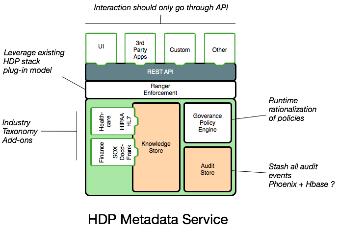
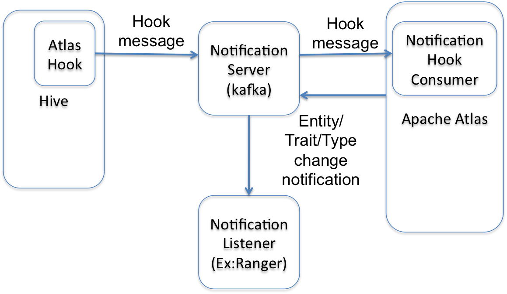

Atlas High Level Architecture - Overview

Architecturally, Atlas has the following components:
- A Web service: This exposes RESTful APIs and a Web user interface to create, update and query metadata.
- Metadata store: Metadata is modeled using a graph model, implemented using the Graph database Titan. Titan has options for a variety of backing stores for persisting the graph, including an embedded Berkeley DB, Apache HBase and Apache Cassandra. The choice of the backing store determines the level of service availability.
- Index store: For powering full text searches on metadata, Atlas also indexes the metadata, again via Titan. The backing store for the full text search is a search backend like ElasticSearch or Apache Solr.
- Bridges / Hooks: To add metadata to Atlas, libraries called ‘hooks’ are enabled in various systems like Apache Hive, Apache Falcon and Apache Sqoop which capture metadata events in the respective systems and propagate those events to Atlas. The Atlas server consumes these events and updates its stores.
- Metadata notification events: Any updates to metadata in Atlas, either via the Hooks or the API are propagated from Atlas to downstream systems via events. Systems like Apache Ranger consume these events and allow administrators to act on them, for e.g. to configure policies for Access control.
- Notification Server: Atlas uses Apache Kafka as a notification server for communication between hooks and downstream consumers of metadata notification events. Events are written by the hooks and Atlas to different Kafka topics. Kafka enables a loosely coupled integration between these disparate systems.
Bridges
External components like hive/sqoop/storm/falcon should model their taxonomy using typesystem and register the types with Atlas. For every entity created in this external component, the corresponding entity should be registered in Atlas as well. This is typically done in a hook which runs in the external component and is called for every entity operation. Hook generally processes the entity asynchronously using a thread pool to avoid adding latency to the main operation. The hook can then build the entity and register the entity using Atlas REST APIs. Howerver, any failure in APIs because of network issue etc can result in entity not registered in Atlas and hence inconsistent metadata.
Atlas exposes notification interface and can be used for reliable entity registration by hook as well. The hook can send notification message containing the list of entities to be registered. Atlas service contains hook consumer that listens to these messages and registers the entities.
Available bridges are:
Notification
Notification is used for reliable entity registration from hooks and for entity/type change notifications. Atlas, by default, provides Kafka integration, but its possible to provide other implementations as well. Atlas service starts embedded Kafka server by default.
Atlas also provides NotificationHookConsumer that runs in Atlas Service and listens to messages from hook and registers the entities in Atlas. 